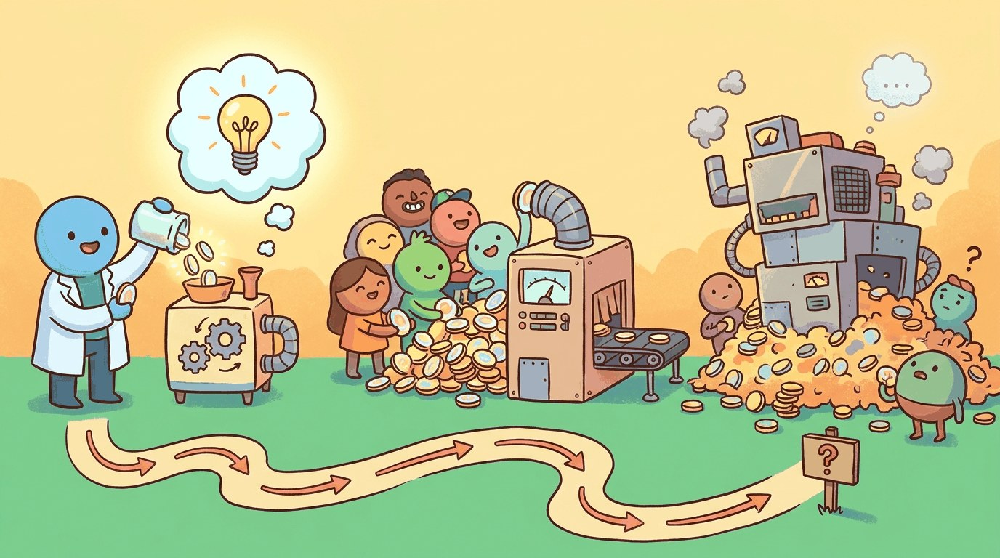

"Unit economics is the part of the LLM product that decides whether it can be a product."
Compass, Economically-Disciplined AI Agent
Chapter 68 prototyped the product; this chapter measures whether it can scale. Cost per request, cost per user, gross margin, fixed vs variable inference cost, monetization patterns, and the financial model that turns an LLM demo into a defensible business.
Every LLM dollar buys something specific, and at some volume the unit economics either work or they don't. This chapter covers scaling economics: ROI measurement, value attribution, and the economic design of LLM systems so that growth doesn't kill the margin.
The canonical pricing-dynamic anchor is the roughly 10x cost drop from GPT-4 to GPT-4o (May 2024) at comparable quality, the move that retroactively rewrote unit economics for thousands of deployed products. The price/performance disruption anchor is DeepSeek-V3 (Dec 2024), reported to have trained for roughly $5.5M in compute against frontier-tier benchmarks. The unit-economics-at-scale anchor is Cursor, which by 2025 was running an estimated $8M-per-year inference bill against $100M+ ARR, illustrating both the gross-margin pressure and the leverage of effective routing strategies.
Chapter Overview
Unit economics for LLM products are harder than for SaaS because the unit cost varies with the user, the prompt, and the model. This chapter teaches ROI measurement and value attribution, economic design at the system level (trading latency, quality, and cost as a joint objective), and token cost forecasting plus multi-vendor arbitrage across a real product portfolio.
LLM economics shifted from "interesting line item" to "core product decision" between 2023 and 2026. This chapter is the practitioner's syllabus for the math and the trade-offs.
- Measure ROI and value attribution for an LLM product with variable per-user cost.
- Apply economic design to trade latency, quality, and cost as a joint optimization.
- Forecast token cost across vendors and traffic profiles.
- Architect multi-vendor arbitrage that survives provider deprecation and price changes.
- Diagnose unit-cost regressions across user segments and prompt patterns.
Sections in This Chapter
Prerequisites
- Prototyping and shipping from Chapter 68
- LLM API and rate-limit economics from Chapter 11
- Basic financial modeling (CAC, LTV, gross margin)
- 69.1 ROI Measurement & Value Attribution ROI for AI products is harder than for SaaS because the unit cost varies with the user, the prompt, and the model.
- 69.2 Economic Design of LLM Systems Economic design means trading off latency, quality, and cost at the system level rather than chasing one metric.
- 69.3 Token Cost Forecasting and Multi-Vendor Arbitrage Section 69.2 showed you the per-token unit-cost math for a single vendor at a single moment.
You are pitching an LLM-powered support-assistant feature internally. The team currently handles 50,000 tickets per month at an average human cost of $4.20 per ticket. Your proposal: a tiered LLM router that handles 60% of tickets autonomously at $0.012 each and escalates the rest. (a) What is the monthly unit-cost saving if quality is held constant? (b) Sketch two failure modes that would erase the saving and one operational check that catches each before quarter end.
Answer Sketch
(a) Autonomous handling: 30,000 tickets at $0.012 = $360/mo; escalated handling: 20,000 tickets at $4.20 = $84,000/mo; total LLM-assisted cost = $84,360. Status quo cost: 50,000 times $4.20 = $210,000. Saving: about $125,640 per month, or roughly 60%. (b) Failure modes: silent quality regression (router confidence drifts up while accuracy drops), and undetected ticket re-opens (users return to ask the same question). Catch the first with a weekly judge-vs-human spot check on a sampled batch (covered in Chapter 46); catch the second by tracking 7-day reopen rate as a guardrail metric tied to the router's accept threshold.
What Comes Next
In the next section, Section 69.1: ROI Measurement & Value Attribution, we get to work on the chapter's first concrete topic. After this chapter you continue to Chapter 70: Shipping and Scaling AI Products.